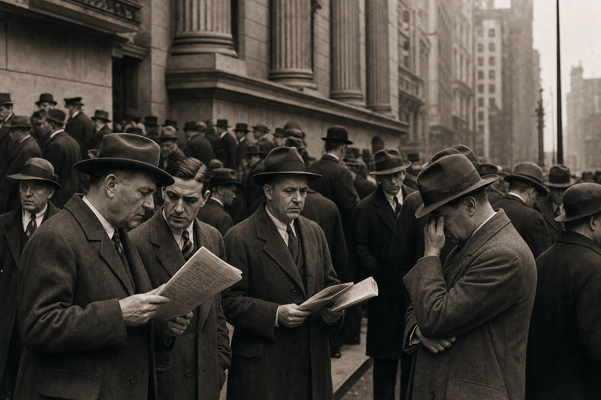
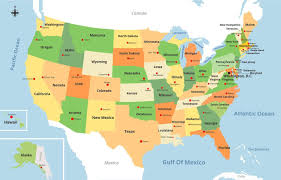
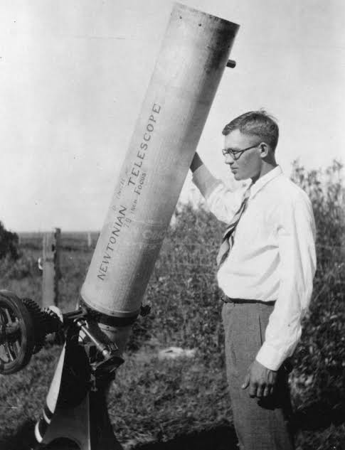
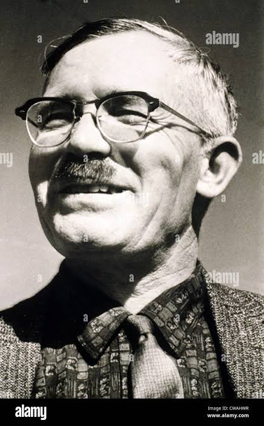
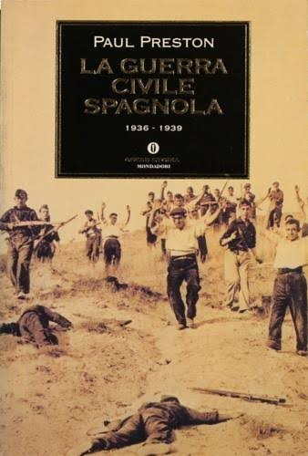
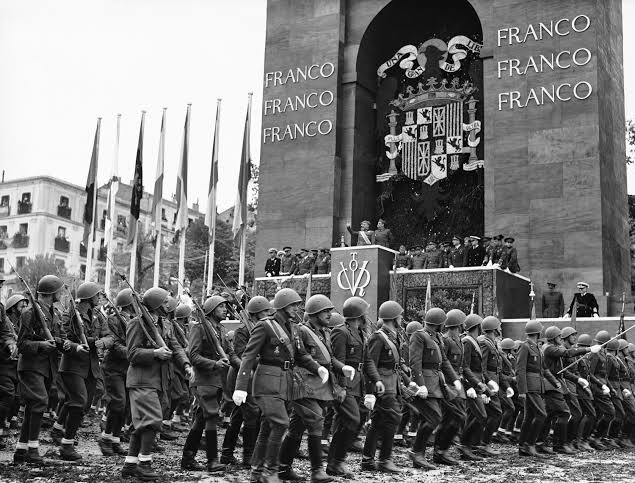
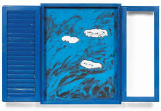

L'economia
Un viaggio tra storia, società, tecnologia e vita quotidiana
Ho scelto di incentrare la mia tesina sull'economia perché è una materia che mi appassiona molto e che penso mi servirà anche in futuro. È un argomento super attuale: tutto quello che succede nel mondo dell'economia tocca da vicino la nostra vita di tutti i giorni. Studiare queste cose è stato davvero interessante e, grazie anche all'aiuto dei professori, sono riuscito a collegare le diverse materie in modo chiaro. Ora vi presento la mia mappa concettuale per mostrarvi tutti i collegamenti che ho scelto.
Studente
VANNI MARFELLA
Classe
3 I
Esame di terza media
Anno scolastico 2025/2026
Mappa dei collegamenti
Storia - Collegamento con Economia

Dopo la Prima Guerra Mondiale, gli Stati Uniti divennero la più grande potenza economica mondiale, vivendo negli anni '20 un periodo di enorme ricchezza e ottimismo (i "Ruggenti Anni Venti"). In questa atmosfera di benessere, tantissimi cittadini iniziarono a investire i propri risparmi nella borsa di Wall Street.
Tuttavia, nel 1929 l'economia entrò in una crisi di sovrapproduzione: le industrie producevano più merci di quante la gente potesse comprarne. Il panico che ne seguì portò al crollo della borsa di Wall Street il 24 ottobre 1929 ("Giovedì Nero"). Questo disastro finanziario diede inizio alla Grande Depressione: le banche fallirono, le fabbriche chiusero e milioni di americani rimasero disoccupati.
La ripresa arrivò nel 1932 con l'elezione del presidente Franklin D. Roosevelt, che lanciò il New Deal ("Nuovo Corso"). Con questo piano, lo Stato intervenne direttamente nell'economia finanziando grandi lavori pubblici per dare lavoro ai disoccupati, introducendo controlli sulle banche e creando riforme sociali per proteggere i cittadini, riuscendo così a risanare il Paese.
Il New Deal rappresenta un perfetto esempio di come l'intervento dello Stato possa risollevare un'economia in crisi, dimostrando il legame profondo tra politica, economia e storia.
Questa connessione tra economia e storia mostra come gli eventi finanziari abbiano plasmato il destino delle nazioni e delle persone.
Geografia - Collegamento con Economia

Gli Stati Uniti d'America sono una repubblica federale composta da 50 Stati. Sono il quarto Paese più grande del mondo e sono bagnati dall'Oceano Atlantico a est e dall'Oceano Pacifico a ovest. Questa posizione geografica è stata fondamentale per la loro economia: i due oceani hanno protetto l'America dai conflitti mondiali e hanno permesso di commerciare facilmente con l'Europa e con l'Asia.
La storia economica degli USA è iniziata con le tredici colonie inglesi, che nel 1776 dichiararono l'indipendenza con George Washington come primo presidente. Nel 1803 l'acquisto della Louisiana dalla Francia raddoppiò il territorio. L'economia crebbe grazie all'agricoltura del Sud (cotone, tabacco) e all'industrializzazione del Nord. Dopo la Guerra Civile (1861-1865) tra Nord e Sud, il presidente Abraham Lincoln abolì la schiavitù e unificò il Paese.
L'economia americana si divide in tre settori. Il settore primario comprende l'agricoltura (mais, grano, soia), l'allevamento e l'estrazione di petrolio, carbone e gas naturale. Il settore secondario è l'industria: acciaio, automobili, aerei, elettronica e prodotti chimici. Grandi aziende come Ford e General Electric sono nate qui. Il settore terziario è il più importante e include banche, assicurazioni, commercio, turismo e servizi. Oggi la Silicon Valley in California è il centro mondiale della tecnologia, con aziende come Apple, Google e Microsoft.

Nel Novecento gli USA sono diventati la prima potenza economica mondiale. Dopo la crisi del 1929, il presidente Franklin D. Roosevelt lanciò il New Deal per far ripartire l'economia. Durante la Guerra Fredda, presidenti come John F. Kennedy e Ronald Reagan guidarono il Paese in un periodo di crescita. Oggi gli Stati Uniti hanno il PIL più alto del mondo e la loro economia influenza tutti gli altri Paesi, dimostrando il legame strettissimo tra geografia, storia ed economia.
Italiano - Collegamento con Economia
Luigi Pirandello, nei suoi romanzi e nelle sue opere teatrali, riflette sulla crisi dell'identità dell'uomo moderno. Secondo Pirandello, ogni persona possiede un "io individuale" autentico e privato, che però viene continuamente schiacciato dalle "maschere" imposte dalla società. La società ci obbliga a recitare ruoli fissi (padre, lavoratore, cittadino) che non corrispondono mai al nostro vero io. Questa frattura tra ciò che siamo realmente e ciò che dobbiamo mostrare è la causa della sofferenza e dell'alienazione dell'individuo.
Il tema dell'io individuale si lega all'economia perché il sistema economico costringe le persone a identificarsi con il proprio ruolo lavorativo. Siamo ciò che produciamo, ciò che guadagniamo, il posto che occupiamo nella gerarchia sociale. Pirandello mostra come l'uomo venga ridotto a una "forma" economica, perdendo la sua "vita" autentica. L'esempio più chiaro è il romanzo Il fu Mattia Pascal: il protagonista, stanco della sua vita opprimente, simula la propria morte e cerca di vivere libero, ma scopre che senza un'identità sociale (e quindi anche economica) non può esistere nella società. Anche in Uno, nessuno e centomila Vitangelo Moscarda scopre di essere "centomila" persone diverse per gli altri e "nessuno" per sé stesso, distrutto dalle aspettative sociali. Pirandello ci insegna che l'economia non è solo numeri e produzione, ma riguarda anche la dignità della persona e il diritto di essere sé stessi.
Riferimenti
Treccani - Luigi PirandelloScienze - Collegamento con Economia

In scienze ho scelto di parlare di Plutone e delle scoperte scientifiche che lo riguardano. La scoperta di Plutone e l'esplorazione spaziale sono un perfetto esempio di come la ricerca scientifica e la tecnologia siano motori fondamentali dell'economia moderna.
Plutone fu scoperto il 18 febbraio 1930 dall'astronomo statunitense Clyde Tombaugh presso l'Osservatorio Lowell in Arizona. La sua esistenza era stata ipotizzata già all'inizio del Novecento da Percival Lowell, che cercava un misterioso "Pianeta X" oltre Nettuno. Per anni gli scienziati lo considerarono il nono pianeta del Sistema Solare. Il nome "Plutone" fu suggerito da Venetia Burney, una bambina inglese di 11 anni, e piacque perché le prime due lettere (PL) corrispondevano alle iniziali di Percival Lowell.
Nel 1978 fu scoperta la sua luna più grande, Caronte, seguita negli anni da altre quattro lune: Stige, Notte, Cerbero e Idra. Nel 2006 la sonda New Horizons della NASA fu lanciata dalla Terra con il preciso obiettivo di raggiungere Plutone. Dopo un viaggio di oltre 9 anni e 5 miliardi di chilometri, il 14 luglio 2015 New Horizons sorvolò Plutone, regalandoci le prime immagini ravvicinate mai viste: scoprì montagne di ghiaccio alte fino a 3500 metri, pianure di azoto ghiacciato (la famosa "Sputnik Planitia"), un'atmosfera sottile di azoto e metano, e persino segni di possibile attività geologica ancora in corso.


Clyde Tombaugh era un giovane astronomo americano. Lavorava all'Osservatorio Lowell in Arizona. Confrontava lastre fotografiche del cielo notturno, cercando un punto che si muoveva tra le stelle. Il 18 febbraio 1930, dopo mesi di lavoro, trovò un piccolo puntino che si muoveva: era Plutone. Questa scoperta lo rese famoso in tutto il mondo. Oggi Tombaugh è considerato uno dei più importanti astronomi del Novecento.
Le scoperte su Plutone hanno un importante legame con l'economia. La missione New Horizons è costata circa 720 milioni di dollari, una cifra che può sembrare enorme ma che ha generato un indotto economico significativo: migliaia di posti di lavoro tra ingegneri, scienziati e tecnici, innovazioni tecnologiche poi riutilizzate in campo medico e industriale, e un enorme ritorno in termini di conoscenza. L'esplorazione spaziale, inoltre, è oggi un settore economico in forte crescita, con aziende private che investono miliardi e creano nuove opportunità di lavoro e sviluppo tecnologico.
Inglese - The Marshall Plan
The Marshall Plan was a big economic help program. After World War II, Europe was in very bad condition. Many cities were destroyed by bombs. Factories were broken. Roads and railways were damaged. Many people did not have food, a house, or a job. The situation was very difficult for everyone.
In 1947, an American politician named George C. Marshall had an idea. He wanted to help Europe rebuild. The United States gave a lot of money to European countries. This money was called the Marshall Plan or the European Recovery Program. From 1948 to 1951, the USA gave about 13 billion dollars. Today, that is more than 140 billion dollars.
Sixteen countries received this help. Italy, France, Germany, and the United Kingdom were some of them. The countries used the money to rebuild roads, railways, bridges, and schools. They also bought new machines for factories and farms. Farmers got better tools to grow more food. Workers built new power plants to have electricity again.
The countries had to work together. They formed a group called the OEEC. This group helped them cooperate and share ideas. This was very important because it created peace between European countries. After the war, many countries were enemies. The Marshall Plan helped them become friends and work together for a better future.
The results were very good. In 1952, factories in Europe produced 35% more than before the war. People found jobs again. Families could buy food and clothes. Children went back to school. The economy grew and grew. The Marshall Plan is a very good example of how money and cooperation can change the world. It shows that when countries help each other, everybody wins. This is why I chose this topic for my economy project.
Spagnolo - Collegamento con Economia

La Guerra Civil Española (1936-1939) tuvo profundas causas y consecuencias económicas que transformaron radicalmente el país. Antes del conflicto, España era un país atrasado y basado en una fuerte desigualdad social: la riqueza y la mayoría de las tierras cultivables estaban concentradas en manos de unos pocos grandes terratenientes y de la Iglesia, mientras millones de campesinos vivían en la miseria más absoluta. Los intentos de la Segunda República de aplicar una reforma agraria para redistribuir las tierras fracasaron, alimentando las tensiones que llevaron al golpe de estado militar.
Durante la guerra, la economía se militarizó y se dividió por completo: el bando republicano perdió casi todas sus reservas financieras (el famoso "Oro de Moscú") para comprar armas a la Unión Soviética, mientras que el bando nacionalista de Francisco Franco obtuvo enormes líneas de crédito y suministros de Italia y Alemania. Con la victoria de Franco en 1939, la economía española estaba devastada.

El nuevo régimen dictatorial impuso la autarquía, un modelo económico de autosuficiencia que buscaba aislar a España de los mercados internacionales.Esta decisión, unida a la destrucción de infraestructuras y fábricas por los bombardeos, causó una gravísima recesión: durante más de una década España sufrió una dramática escasez de alimentos y materias primas, lo que obligó al Estado a introducir el racionamiento de los bienes de primera necesidad y alimentó un enorme mercado negro (conocido como estraperlo). En conclusión, la guerra civil española representa un claro ejemplo de cómo las injusticias económicas pueden desatar un conflicto y cómo las políticas aislacionistas posteriores a la guerra pueden condenar a un país a décadas de pobreza.
Tecnologia - Collegamento con Economia
Le origini: dal carbone al petrolio (XVIII-XX secolo)
Fino alla metà del XIX secolo, l'economia mondiale si basava su energie rinnovabili tradizionali: legna, vento, acqua e forza animale. La prima rivoluzione industriale (1760-1840) fu alimentata dal carbone, che permetteva di produrre acciaio su larga scala e di alimentare le locomotive a vapore. Il petrolio era ancora sconosciuto ai più: si utilizzava solo in piccole quantità come medicinale o per l'illuminazione (petrolio lampante). La svolta arrivò nel 1859, quando Edwin Drake perforò il primo pozzo petrolifero in Pennsylvania (USA), dando inizio all'era del petrolio. Con l'invenzione del motore a scoppio (1876) e la produzione di massa dell'automobile (Ford Model T, 1908), il petrolio divenne la fonte energetica dominante.
Il Novecento: il secolo del petrolio
Nel corso del Novecento il petrolio trasformò radicalmente l'economia globale. Dopo la Seconda guerra mondiale, il suo basso costo permise il boom economico degli anni Cinquanta e Sessanta: le fabbriche producevano a ritmi mai visti, le automobili diventarono un bene di massa, nacquero la plastica, i fertilizzanti chimici e i tessuti sintetici (nylon, poliestere). L'energia a basso prezzo rese possibile la globalizzazione: le merci potevano viaggiare per migliaia di chilometri via nave, treno e aereo a costi irrisori. I paesi occidentali costruirono la loro ricchezza sul petrolio, diventandone però totalmente dipendenti. Questa dipendenza emerse con violenza negli shock petroliferi del 1973 e 1979, quando l'OPEC interruppe le forniture e il prezzo del barile quadruplicò, gettando l'Occidente nella stagflazione (stagnazione economica + inflazione).
Oggi: la dipendenza nascosta del XXI secolo
Oggi il consumo globale di petrolio supera i 100 milioni di barili al giorno, ma il suo ruolo nell'economia è cambiato. Da un lato, l'intensità petrolifera del PIL si è ridotta: i paesi sviluppati consumano meno petrolio per ogni unità di ricchezza prodotta grazie all'efficienza energetica e alle rinnovabili (in Italia il rapporto idrocarburi/PIL è calato del 45% dal 1980). Dall'altro lato, il petrolio è diventato invisibile ma onnipresente: non serve più solo per i trasporti (benzina, diesel, cherosene), ma è la materia prima di plastica, fertilizzanti, farmaci, tessuti, computer e persino pannelli solari e pale eoliche. Circa il 60-80% del greggio va in carburanti, ma il 10-20% (e la percentuale sale) alimenta l'industria petrolchimica da cui dipendono migliaia di prodotti essenziali.
L'evoluzione tecnologica: estrarre e raffinare sempre meglio
Le tecnologie di estrazione e raffinazione del petrolio si sono evolute enormemente. Negli anni Cinquanta si perforava solo in terraferma (onshore) con pozzi verticali. Oggi si estrae il petrolio in acque profonde oltre 3.000 metri (offshore), con piattaforme galleggianti e perforazioni direzionali che raggiungono giacimenti a chilometri di distanza dal punto di perforazione. Tecnologie come il fracking (fratturazione idraulica) hanno permesso agli Stati Uniti di estrarre petrolio e gas da rocce di scisto, trasformandoli da importatori a esportatori netti. La raffinazione si è evoluta dai semplici processi di distillazione dei primi del Novecento ai moderni cracking catalitici che permettono di ottenere prodotti sempre più specifici: dalla benzina alla nafta per la petrolchimica, dai lubrificanti ai bitumi per l'asfalto.
Passato vs presente: i numeri del cambiamento
Nel 1900 il mondo consumava circa 150.000 barili di petrolio al giorno; oggi ne consuma 100 milioni, oltre 650 volte di più. Il prezzo è passato da meno di 1 dollaro al barile all'inizio del Novecento a oltre 100 dollari oggi (con punte di 146 nel 2008). La dipendenza economica, però, ha cambiato natura: negli anni Settanta uno shock petrolifero bloccava fabbriche e automobili; oggi uno shock colpisce soprattutto i bilanci delle famiglie (bollette, carburante) e la filiera petrolchimica (materie plastiche, fertilizzanti, farmaci). La differenza fondamentale è che oggi esistono alternative (rinnovabili, efficienza, elettrificazione) che negli anni Settanta non c'erano, ma la transizione è ancora lenta e la domanda globale di petrolio continua a crescere nei paesi emergenti come Cina e India.
L'attualità: la crisi del 2026 e le prospettive future
Nel 2026 il conflitto tra Stati Uniti e Iran ha chiuso lo Stretto di Hormuz (da cui passa il 20% del petrolio mondiale), facendo crollare la produzione globale da 108 a 94,5 milioni di barili al giorno. Il prezzo del Brent è salito da 72 a oltre 100 dollari. La crisi ha effetti a catena su tutta l'economia: la nafta è aumentata del 60%, l'urea del 37%, l'alluminio del 25%. In Italia, Banca d'Italia prevede una crescita del PIL ferma allo 0,5% e un'inflazione al 2,9%. La lezione della storia è chiara: il petrolio è stata la fonte di energia che ha costruito la ricchezza moderna, ma la sua dipendenza geopolitica costa cara. L'evoluzione in corso punta verso le fonti rinnovabili (solare, eolico, idrogeno verde) e l'elettrificazione dei trasporti, ma il petrolio rimarrà per decenni una materia prima insostituibile per la petrolchimica e i settori hard-to-abate.
Arte - Collegamento con Economia
In arte ho scelto la Pop Art, un movimento nato in America e in Inghilterra, e il suo impatto sull'economia italiana. Negli anni Sessanta, l'Italia visse il suo "miracolo economico", un periodo di forte industrializzazione che trasformò il Paese in una società del benessere e dei consumi di massa. In questo clima di cambiamento arrivò dagli Stati Uniti la Pop Art, che gli artisti italiani rielaborarono legandola alla nostra tradizione culturale. Questo movimento influenzò profondamente l'economia e ne fu, al tempo stesso, lo specchio. Artisti come Mario Schifano portarono nelle loro opere i nuovi simboli del boom, come i loghi pubblicitari della Coca-Cola o della Esso, trasformando i prodotti commerciali in arte. Questa tendenza modificò radicalmente il mercato artistico, poiché le opere iniziarono a essere prodotte più rapidamente, con materiali industriali ed economici, diventando esse stesse beni di consumo accessibili a un pubblico più ampio. Si creò così un legame strettissimo tra arte e industria: se da un lato i pittori si ispiravano ai prodotti dei supermercati, dall'altro le grandi aziende italiane di moda e design iniziarono a copiare i colori accesi e lo stile della Pop Art per pubblicizzare e vendere le proprie merci, dimostrando come l'economia potesse plasmare la cultura del tempo.
Ho deciso di portare uno dei massimi esponenti della Pop Art italiana e mondiale, ovvero Tano Festa (1938-1988), figura chiave della celebre "Scuola di Piazza del Popolo" a Roma. Formatosi inizialmente come fotografo artistico, nei primi anni Sessanta avviò la sua carriera isolando oggetti quotidiani in legno, come porte, finestre e persiane, che dipingeva interamente con smalti industriali per privarli della loro funzione comune e trasformarli in veri e propri quadri-scultura.
La sua intuizione più celebre e geniale arrivò tra il 1963 e il 1964, in pieno miracolo economico: mentre gli artisti americani come Andy Warhol celebravano i prodotti dei supermercati o i divi di Hollywood, Festa capì che in Italia il vero "bene di largo consumo" era l'arte classica e rinascimentale, con cui i cittadini convivevano da secoli. Nacque così la sua serie "Omaggio a Michelangelo" (di cui fa parte l'opera L'Eden), in cui proiettava sulla tela le fotografie di capolavori come gli affreschi della Cappella Sistina, ridisegnandone i contorni con tinte piatte, accese e artificiali. Attraverso questo metodo, Festa dimostrò come i capolavori del passato potessero essere reinterpretati come moderni manifesti pubblicitari, inserendosi nei meccanismi visivi e commerciali della nuova società dei consumi.
Tra le sue opere più celebri ricordiamo Persiana (1963), la sua opera-icona in cui una persiana reale in legno diventa essa stessa quadro; la serie Omaggio a Michelangelo con le rivisitazioni della Cappella Sistina come Creazione di Adamo; La grande odalisca (citazione di Ingres); Particolare dei coniugi Arnolfini (citazione di Van Eyck); la serie Finestra n. 1; la serie Coriandoli (1980); e Monumento per un poeta morto (Finestra sul mare).

Educazione fisica - Collegamento con Economia
Le Olimpiadi di Los Angeles 1932
I Giochi della X Olimpiade si svolsero a Los Angeles dal 30 luglio al 14 agosto 1932, in piena Grande Depressione. Nonostante la crisi economica globale — con il crollo di Wall Street del 1929 che aveva messo in ginocchio l'economia mondiale — Los Angeles riuscì a organizzare giochi di successo, puntando su infrastrutture già esistenti e soluzioni a basso costo. Parteciparono 37 nazioni con 1.332 atleti (solo 126 donne), numeri dimezzati rispetto al 1928 per via della crisi: molti paesi non potevano permettersi il viaggio fino in California.
La creazione del primo Villaggio Olimpico
Per la prima volta nella storia delle Olimpiadi moderne, venne costruito un villaggio olimpico appositamente per ospitare gli atleti. L'idea nacque per motivi economici: il Comitato Organizzatore doveva convincere le nazioni a partecipare nonostante i costi elevati del viaggio. Garantendo vitto e alloggio a soli 2 dollari al giorno per atleta (contro i 1.500 stimati dal CIO), il villaggio rese economicamente accessibile la partecipazione. Il villaggio sorgeva a Baldwin Hills su un'area di 330 acri donata temporaneamente dai proprietari. Progettato da H.O. Davis, comprendeva oltre 500 casette prefabbricate in stile "cottage", più un ufficio postale, un cinema, un ospedale, una banca, sale da pranzo e servizi igienici comuni. Era circondato da una recinzione di filo metallico alta 2,5 metri e aveva una strada sterrata principale. Le atlete donne, invece, furono alloggiate al Chapman Park Hotel, poiché all'epoca non si riteneva opportuno mescolare i sessi nel villaggio.
Impatto economico e innovazione
Il villaggio olimpico rappresentò un'innovazione economica e organizzativa destinata a diventare uno standard per tutte le Olimpiadi future. Dopo la cerimonia di chiusura, tutte le strutture vennero smantellate e il terreno restituito ai proprietari, come da accordo. I Giochi del 1932 lasciarono in eredità strutture come il Memorial Coliseum (ancora in uso e riconfermato per i Giochi del 2028) e il Rose Bowl, dimostrando come un evento sportivo possa generare infrastrutture durature e sviluppo economico per il territorio. L'idea del villaggio olimpico — nata per risparmiare denaro — divenne il simbolo dell'unità e della fraternità tra i popoli, realizzando l'ideale di De Coubertin di "riunire la gioventù del mondo in una comunità".
Educazione civica - Collegamento con Economia
L'educazione finanziaria
L'educazione finanziaria insegna a gestire consapevolmente il proprio denaro, una competenza fondamentale per la vita di tutti i giorni. Il primo passo è il bilancio familiare: tenere traccia di entrate (stipendi, pensioni) e uscite (affitto, bollette, cibo, trasporti, svago) per capire dove va il denaro e individuare eventuali sprechi. La regola 50-30-20 aiuta a dividere le entrate in modo equilibrato: 50% per le spese necessarie (casa, bollette, alimentari), 30% per i desideri personali (viaggi, hobby, ristoranti) e 20% per il risparmio e la riduzione dei debiti.
Risparmiare è importante per affrontare imprevisti (riparazioni dell'auto, spese mediche, perdita del lavoro) e realizzare progetti futuri (studi, vacanze, casa). L'ideale è accantonare almeno 3-6 mesi di spese come fondo di emergenza. Il credito (prestiti, mutui, finanziamenti) è uno strumento utile per acquisti importanti come una casa o un'auto, ma va usato con cautela: la rata mensile non dovrebbe superare il 30% del reddito e bisogna sempre confrontare il costo totale del finanziamento tra diverse offerte.
Esistono vari strumenti di pagamento: il contante è anonimo ma non protegge da furto o smarrimento; la carta di credito permette di pagare a rate ma ha interessi alti se non si salda l'estratto conto in tempo; la carta di debito preleva subito dal conto, evitando debiti, ma offre meno tutele in caso di frode. Conoscere queste basi aiuta a evitare truffe, indebitamento eccessivo e a pianificare con serenità il proprio futuro economico.
Latino - Collegamento con Economia
La società romana e l'economia
La società romana era rigidamente gerarchica e l'economia era il riflesso di questa struttura. Al vertice c'erano i patrizi, grandi proprietari terrieri che controllavano la maggior parte delle terre e delle risorse. Seguivano i plebei, divisi tra ricchi commercianti e artigiani (che cercavano diritti politici) e poveri contadini senza terra (che chiedevano sussidi e distribuzioni di grano). Alla base c'erano gli schiavi, considerati proprietà, privi di diritti e impiegati in agricoltura, miniere, artigianato e servizi domestici. I liberti (schiavi liberati) potevano arricchirsi e fare carriera, specialmente nella burocrazia imperiale.
Agricoltura, latifondo e schiavitù
L'economia romana era prevalentemente agricola. In età repubblicana prevaleva la piccola proprietà contadina (policoltura per autoconsumo), ma con le guerre di conquista e il servizio militare prolungato i piccoli proprietari furono costretti a vendere i poderi. Nacquero così i latifondi, enormi tenute dei patrizi dove si coltivava un unico prodotto su larga scala (vite, olivo, cereali) usando manodopera servile a costo zero. Questo sistema era altamente redditizio per i proprietari, ma distrusse la classe dei piccoli contadini e creò forti disuguaglianze sociali. Nelle villae rusticae si organizzava la produzione con schiavi, lavoratori stagionali e coloni (affittuari che pagavano in natura).
Commercio, monete e infrastrutture
Con l'espansione territoriale, il commercio divenne fondamentale. Roma coniò il denarius (moneta d'argento) che facilitò gli scambi in tutto il Mediterraneo. Le strade romane (via Appia, via Flaminia, via Aurelia) erano infrastrutture economiche essenziali: costruite per spostare l'esercito, servivano anche al trasporto di merci, collegando città, porti e mercati. I porti di Ostia e Puteoli erano snodi commerciali dove arrivavano spezie, tessuti, metalli e prodotti esotici da Africa, Asia ed Europa. Durante l'Impero (II secolo d.C., il "secolo d'oro"), la pax romana garantì stabilità e sviluppo economico, con grandi opere pubbliche (acquedotti, fori, terme, anfiteatri) finanziate dalle tasse e dai tributi delle province.
Religione - Collegamento con Economia
L'enciclica "Quadragesimo Anno" di Pio XI
Il 15 maggio 1931 papa Pio XI pubblicò l'enciclica "Quadragesimo Anno" (espressione latina che significa "nel quarantesimo anno"), scritta in occasione del quarantesimo anniversario della Rerum Novarum di Leone XIII, la prima grande enciclica sociale della Chiesa. Il titolo completo è "Sulla ricostruzione dell'ordine sociale". Fu fortemente ispirata dalla crisi economica mondiale successiva al crollo di Wall Street del 1929. L'enciclica rappresenta il secondo pilastro della dottrina sociale della Chiesa cattolica e affronta il rapporto tra economia, giustizia e dignità umana.
I principi economici della Quadragesimo Anno
Pio XI condanna sia il capitalismo sfrenato (la "concentrazione di ricchezze e di potenza" nelle mani di pochi) sia il comunismo totalitario, definito "empio" per la sua negazione della religione. L'enciclica introduce due principi fondamentali che diventeranno cardini della dottrina sociale cattolica: il principio di sussidiarietà (lo Stato non deve sostituirsi alle iniziative dei corpi intermedi, ma sostenerle) e il principio di solidarietà (i beni sono destinati a tutti e l'economia deve servire l'uomo, non il profitto). Sul piano economico, Pio XI afferma che la libera concorrenza va regolata entro "ragionevoli e giusti limiti", che i salari devono essere giusti e sufficienti per il sostentamento del lavoratore e della sua famiglia, e che la proprietà privata ha una funzione sociale.
Il collegamento con l'economia oggi
La Quadragesimo Anno è ancora oggi citata nei documenti della Chiesa e ha influenzato tutte le encicliche sociali successive: la Mater et Magistra (1961) di Giovanni XXIII, la Populorum Progressio (1967) di Paolo VI, la Laborem Exercens (1981) di Giovanni Paolo II, la Centesimus Annus (1991) e la Laudato Si' (2015) di Francesco. Il suo messaggio centrale — che l'economia deve essere al servizio della persona umana e del bene comune, e non viceversa — è oggi più attuale che mai, in un mondo segnato da disuguaglianze crescenti, crisi climatiche e conflitti legati alle risorse energetiche.
Musica - Il jazz e la Grande Depressione
Jazz e swing negli Stati Uniti
In musica ho scelto di parlare del jazz, un genere nato negli Stati Uniti tra la fine dell'Ottocento e l'inizio del Novecento, soprattutto nelle comunità afroamericane di città come New Orleans, Chicago e New York. Il jazz unisce ritmo, improvvisazione e libertà espressiva, e per questo diventò uno dei simboli più importanti della cultura americana.
Il collegamento con la crisi del 1929
Dopo il crollo di Wall Street del 1929, gli Stati Uniti entrarono nella Grande Depressione: molte persone persero il lavoro, le banche fallirono e la vita quotidiana diventò difficile. In questo periodo la musica ebbe un ruolo importante: jazz e swing offrivano svago, energia e speranza a una popolazione colpita dalla crisi. Le grandi orchestre, i locali da ballo e la radio permisero a milioni di americani di ascoltare musica anche in un momento di difficoltà economica.
Musica come industria culturale
Il jazz si collega all'economia perché non era solo arte, ma anche lavoro e mercato. Intorno alla musica nacquero professioni e attività economiche: musicisti, cantanti, direttori d'orchestra, tecnici radiofonici, produttori di dischi, proprietari di locali e organizzatori di spettacoli. La radio e l'industria discografica trasformarono la musica in un prodotto culturale diffuso, capace di creare guadagni e occupazione.
Per questo il jazz mostra come la cultura possa diventare parte dell'economia: anche nei periodi di crisi, la musica aiuta le persone a reagire, racconta la società e allo stesso tempo genera lavoro, commercio e innovazione tecnologica.
Riferimenti online consultati
Per realizzare i collegamenti della tesina ho consultato risorse online affidabili, utili per verificare date, eventi storici, argomenti scientifici e riferimenti culturali.
- Treccani - Economia Definizione generale di economia e risorse economiche.
- Federal Reserve History - Stock Market Crash of 1929 Approfondimento sul crollo della Borsa del 1929.
- Britannica - United States Informazioni su geografia, storia ed economia degli Stati Uniti.
- Treccani - Luigi Pirandello Biografia, opere e pensiero di Luigi Pirandello, l'io individuale e le maschere.
- NASA Science - New Horizons Missione spaziale New Horizons e sorvolo di Plutone.
- NASA Science - Pluto Dati e informazioni scientifiche sul pianeta nano Plutone.
- National Archives - Marshall Plan Documenti e sintesi sul Piano Marshall.
- Truman Library - Marshall Plan Raccolta storica sul Piano Marshall e sulla ricostruzione europea.
- Britannica - Spanish Civil War Cause, sviluppo e conseguenze della Guerra civile spagnola.
- Treccani - Guerra di Spagna Approfondimento storico in italiano sulla Guerra civile spagnola.
- Treccani - Petrolio Definizione, storia e utilizzo economico del petrolio.
- Treccani - Storia del petrolio Evoluzione storica del petrolio dall'Ottocento a oggi.
- IEA - Oil Market Report, giugno 2026 Rapporto IEA sull'andamento del mercato petrolifero globale.
- Banca d'Italia - Proiezioni macroeconomiche, giugno 2026 Stime aggiornate su crescita PIL, inflazione e occupazione in Italia.
- Tate - Pop Art Introduzione al movimento della Pop Art.
- Treccani - Tano Festa Scheda biografica sull'artista Tano Festa.
- Treccani - Los Angeles 1932 Scheda storica sulle Olimpiadi di Los Angeles del 1932.
- Official Report - Los Angeles 1932 Rapporto ufficiale del Comitato Organizzatore dei Giochi del 1932.
- PBS - The First Olympic Village Documentario e articolo sul primo villaggio olimpico della storia.
- Banca d'Italia - L'economia per tutti Guida di educazione finanziaria della Banca d'Italia.
- Treccani - Economia romana Approfondimento sull'economia della Roma antica: agricoltura, commercio, schiavitù.
- Britannica - Roman Empire Contesto storico sull'Impero romano, commercio e infrastrutture.
- Vaticano - Quadragesimo Anno Testo integrale dell'enciclica di Pio XI sulla ricostruzione dell'ordine sociale.
- Vaticano - Dottrina sociale della Chiesa Riferimento su lavoro, giustizia sociale, solidarietà e bene comune.
- Britannica - Jazz Origini e sviluppo del jazz negli Stati Uniti.
- Britannica - Swing Approfondimento sullo swing e sulle grandi orchestre americane.
- Britannica - Great Depression Approfondimento sulla Grande Depressione e il New Deal.
- Britannica - Silicon Valley Storia e sviluppo economico della Silicon Valley.
- CONSOB - Educazione finanziaria Guida dell'autorità di vigilanza sui temi di educazione finanziaria.
Conclusione
L'economia aiuta a capire meglio il mondo in cui viviamo. Ogni scelta economica può avere conseguenze sulle persone, sull'ambiente e sulla società. Per questo è importante imparare a consumare e scegliere in modo responsabile. Le fonti online consultate sono raccolte nei riferimenti.
Mappa concettuale